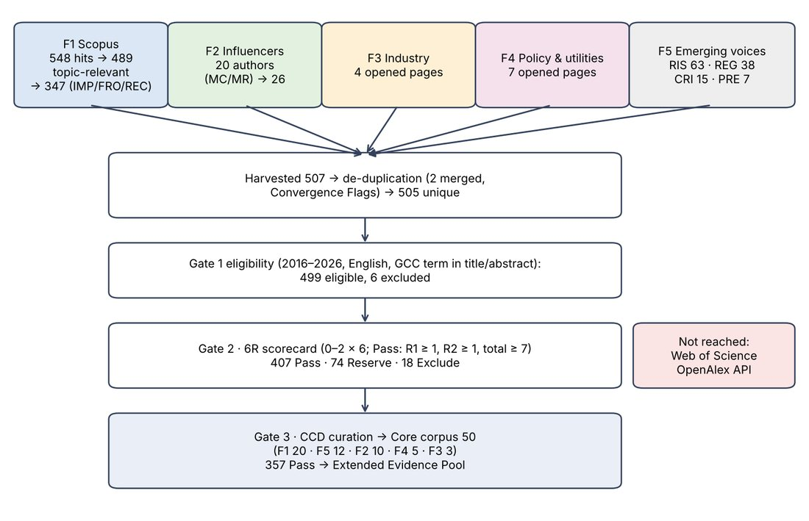
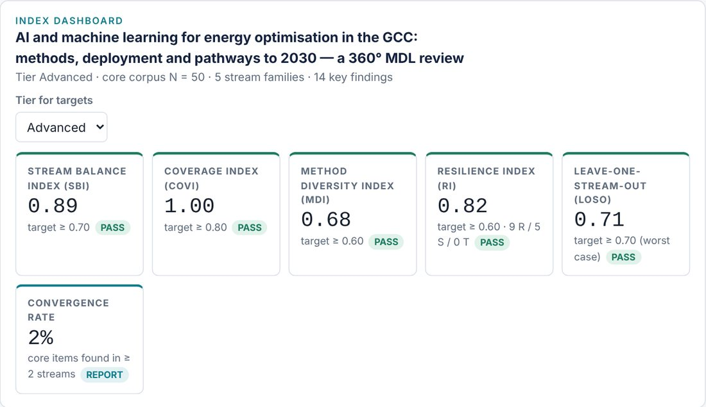
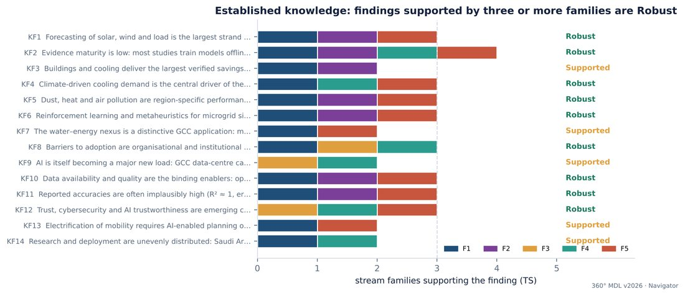
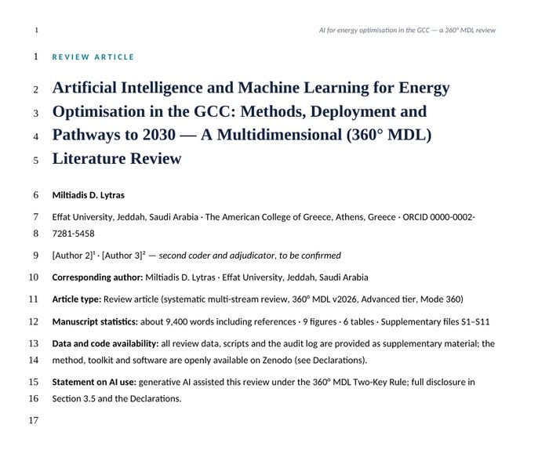
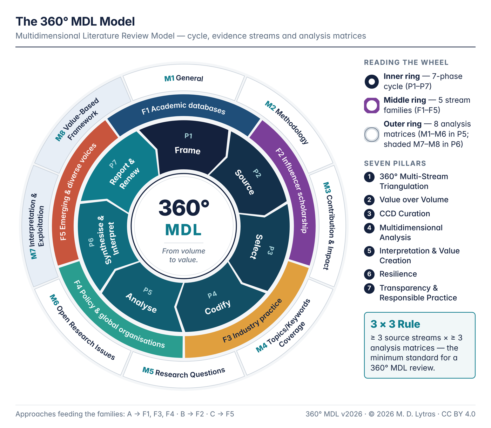

The Multidimensional Literature Review Model draws on five families of evidence instead of one database, passes every item through three transparent gates, and reports indices that show how balanced and robust your review really is. Free tools, with or without AI.
New: How-to Guides 1 and 2 · the methodology paper (preprint) · Navigator AI agent v0.1.2
Every step produces something you can show your supervisor or a reviewer. The Excel toolkit (17 sheets) follows the same seven steps and calculates the checks for you.
Questions, scope, criteria, the five evidence streams.
Review StarterProtocolDatabases, influential authors, industry, policy and emerging voices. Every query logged.
Strings from the StarterSearch logGate 1 eligibility, Gate 2 the 6R scorecard, Gate 3 a balanced core.
Toolkit · CalculatorCore corpus + flow diagramRead each core item in full; one row of the Master Table each.
Toolkit T6Master TableMatrices for methods, contributions, themes and gaps.
Toolkit M1–M8Matrices · gapsKey findings, each tested across evidence families.
Toolkit T15Findings · frameworkIndices, figures, methods text, checklist, open data.
Index CalculatorYour chapter or articleThe routes use the same steps, toolkit, gates and indices, and they produce the same deliverables. They differ only in who does the clerical work.
Free planner, Excel toolkit and Index Calculator. Your reading and your judgement do the rest. Works with Scopus, Web of Science, or free sources such as Google Scholar and OpenAlex.
Read: Starter Kit · How-to Guide 1
ChatGPT, Gemini, Copilot, Claude or another assistant: session rules and a tested prompt pack for every step, with the checks you make after each answer and a ready AI-use statement.
Read: Starter Kit (prompt pack) · How-to Guide 1, Part E
The Navigator agent runs the whole method and stops at four Keys for your decisions; Claude in Excel checks the toolkit. From a topic to a submission package with full AI disclosure.
Read: How-to Guide 2 · Claude in Excel guide
A review built with the toolchain in November 2026: AI and machine learning for energy optimisation in the GCC. Followed step by step in How-to Guide 2.




Scores and findings in this example are proposals awaiting the researcher’s confirmation at the four Keys, as How-to Guide 2 explains.
Most literature reviews draw on one or two databases and stop at peer-reviewed articles. 360° MDL asks the reviewer to harvest evidence deliberately from five families, to pass every item through three explicit gates, and to report indices that make the breadth and resilience of the corpus visible. The result is a review that a reader, a reviewer or a supervisor can audit.

| Index | Question it answers | Definition | Target |
|---|---|---|---|
| SBI Stream Balance | Is the corpus dominated by one stream? | Normalised Shannon entropy of core items over the stream families, H / ln k | ≥ 0.70 |
| CovI Coverage | Are the keyword clusters actually covered? | Share of clusters supported by at least three core items (Lite: two) | ≥ 0.80 |
| MDI Method Diversity | Does the evidence rest on one method? | Normalised entropy over the nine method families, H / ln 9 | ≥ 0.60 |
| TS Triangulation Strength | How many streams support each finding? | Number of supporting families per key finding; Robust ≥ 3, Supported = 2 | — |
| RI Resilience | How much of the synthesis is triangulated? | (Robust + 0.5 × Supported) / number of key findings | ≥ 0.60 |
| LOSO Leave-One-Stream-Out | What survives if one stream is removed? | Worst-case share of findings keeping TS ≥ 2 after removing any one family | ≥ 0.70 (Adv.) |
Targets shown are for the Standard tier; Lite relaxes them and Advanced adds LOSO.
Generative AI can save weeks in a literature review and can also invent references, flatten nuance and copy the biases of its training data. 360° MDL allows AI assistance under one condition: every AI output is verified by a human against the original source before it enters the review.
Eight short steps give you the review protocol (Word/PDF), search strings for every database, a balanced stream plan, a timeline with checkpoints and the Excel toolkit already filled in. Nothing is uploaded.
Runs the whole method from a topic sentence to a Knowledge Distillate, stopping at four Keys for your decisions. Builds the toolkit, the D4b Evidence Landscape Report, figures, a methods draft and an audit log. Never writes a reference from memory.
Load a filled toolkit and get the six indices with PASS/CHECK, the Gate 3 checks, a PRISMA 2020-compatible flow diagram, triangulation, figures and a methods sentence. Your data never leaves your computer.
No. The method was designed to be done by hand; the free Review Starter, Excel toolkit and Index Calculator remove the clerical work. AI is optional and always governed by the Two-Key Rule.
They help, but a Lite review can use free sources: Google Scholar (through Publish or Perish), OpenAlex and a free disciplinary database, plus policy and industry sources. How-to Guide 1 shows both.
About 12 weeks part-time for a Lite review (thesis chapter, core of 20–30 items); longer for Standard (journal review, 40–50 items) and Advanced. The Review Starter builds a timeline with three supervisor checkpoints.
Yes. The Index Calculator draws a PRISMA 2020-compatible flow diagram, and the MDL-RC 2026 checklist covers the reporting of all five evidence families, the gates and the indices. See "Coming from PRISMA?" in the Starter Kit.
Cite the methodology (doi:10.5281/zenodo.23724393), see How to cite. Deposit your review or protocol in the 360° MDL Reviews community on Zenodo so others can learn from it.
| Resource | What it is | Link |
|---|---|---|
| Methodology paper (preprint, 2026) | 360° MDL: A Multi-Stream, Multidimensional and Resilience-Tested Methodology for Literature Reviews—Design, Open Toolkit and Demonstration in Two Applied Reviews. Preprints.org; under peer review | preprints.org/manuscript/202611.1160 |
| Review Starter | Guided planner: protocol (T1), search strings, stream plan, timeline, pre-filled toolkit, Navigator file | mlytras.github.io/360mdl/starter.html |
| Methodology, Version 2026 | Specification, Researcher Handbook, Quick Start, Excel toolkit T1–T17, figures, MDL-RC 2026 checklist (13 files) | doi:10.5281/zenodo.23724393 |
| 360° MDL Starter Kit, v1.0 | Your first review from zero, with or without AI: the Lite path on one page, three routes, a tool-neutral prompt pack, "Coming from PRISMA?", 15 pp | doi:10.5281/zenodo.24246082 |
| How-to Guide 1: Your first 360° MDL review, click by click, v1.0 | Free tools and any AI assistant, Lite tier: annotated screens of the Review Starter, Scopus, OpenAlex, the toolkit and the Index Calculator, 42 pp | doi:10.5281/zenodo.24286171 |
| How-to Guide 2: From topic to submission, v1.0 | A complete review article with the full toolchain, followed on a real review (AI and energy in the GCC), 30 pp | doi:10.5281/zenodo.24286189 |
| The 360° MDL Student Handbook, v1.1 | From topic to final deliverables: seven phases, D1–D12 + D4b, three routes, worked example, 86 pp | doi:10.5281/zenodo.24241346 |
| Using Claude in Excel with the 360° MDL Toolkit, v1.0 | Safe working protocol, 30 tested prompts sheet by sheet, AI-use disclosure text, 20 pp | doi:10.5281/zenodo.24241357 |
| The PhD Literature Review Playbook | 12-week step-by-step guide for doctoral researchers, 54 pp (v1.1) | doi:10.5281/zenodo.23777000 |
| Οδηγός Βιβλιογραφικής Ανασκόπησης για Διδακτορικούς | Greek edition of the Playbook | doi:10.5281/zenodo.23807964 |
| The Origins of 360° MDL | The original 2023 sketches, redrawn, explained stream by stream and traced to Version 2026, 14 pp | doi:10.5281/zenodo.24245889 |
| Navigator, v0.1.2 | Claude Skill that executes the method under the Two-Key Rule; builds the toolkit, the D4b Evidence Landscape Report and the Knowledge Distillate | doi:10.5281/zenodo.24041175 · install guide · GitHub |
| Index Calculator, beta 1 | Browser tool, User Guide and Claude protocol | doi:10.5281/zenodo.24033376 |
| Applied reviews and open data | Two full demonstrations with record-level data (supplementary S1–S7) | doi:10.5281/zenodo.23772941 |
| Community | Deposit your 360° MDL review or protocol; all records in one place | zenodo.org/communities/360mdl |
The methodology paper is available as a preprint and is under peer review (2026). The applied reviews cover clinical AI, genetic cardiomyopathy and the energy transition of smart cities in the Arab world.
Lytras, M. D. (2026). 360° MDL: The Multidimensional Literature Review Model — Version 2026. Zenodo. https://doi.org/10.5281/zenodo.23724393
Lytras, M. D. (2026). 360° MDL: A Multi-Stream, Multidimensional and Resilience-Tested Methodology for Literature Reviews—Design, Open Toolkit and Demonstration in Two Applied Reviews [Preprint]. Preprints.org. https://www.preprints.org/manuscript/202611.1160
Lytras, M. D. (2026). The PhD Literature Review Playbook: A step-by-step guide to the 360° MDL method. Zenodo. https://doi.org/10.5281/zenodo.23777000
Lytras, M. D. (2026). 360° MDL Starter Kit: Your first literature review from zero, with or without AI (Version 1.0). Zenodo. https://doi.org/10.5281/zenodo.24246082
Lytras, M. D. (2026). Your first 360° MDL review, click by click: How-to Guide 1 (Version 1.0). Zenodo. https://doi.org/10.5281/zenodo.24286171
Lytras, M. D. (2026). From topic to submission: A complete review article with the 360° MDL toolchain. How-to Guide 2 (Version 1.0). Zenodo. https://doi.org/10.5281/zenodo.24286189
Lytras, M. D. (2026). The Origins of 360° MDL: The original sketches of a resilient literature review methodology (Version 1.0). Zenodo. https://doi.org/10.5281/zenodo.24245889
Lytras, M. D. (2026). The 360° MDL Student Handbook: From topic to final deliverables (Version 1.1). Zenodo. https://doi.org/10.5281/zenodo.24241346
Lytras, M. D. (2026). Using Claude in Excel with the 360° MDL Toolkit: A practical guide to responsible AI assistance in multidimensional literature reviews (Version 1.0). Zenodo. https://doi.org/10.5281/zenodo.24241357
Lytras, M. D. (2026). 360° MDL Navigator (Version 0.1.2) [Software]. Zenodo. https://doi.org/10.5281/zenodo.24241965
Lytras, M. D. (2026). 360° MDL Index Calculator (Version beta 1) [Software]. Zenodo. https://doi.org/10.5281/zenodo.24033376
Using the method? Deposit your review or protocol in the 360° MDL Reviews community on Zenodo, and write to the author with questions, bug reports or suggestions for the calculator: mlytras@acg.edu (subject "360° MDL").